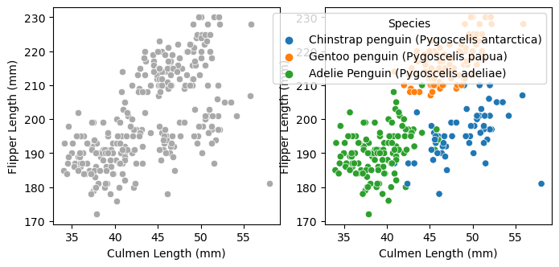

Abstract In this blog posts, I delve into some of the factors that we can use to predict species in the palmer penguins dataset. I used SelectKBest and going through all combinations to select my columns that I’d use to try to predict species. Although both SelectKBest and combinations method got similar levels of accuracy, they selected slightly different columns. Finally, I visualize my model to showcase how future data predictions would look.
Importing Palmer Penguins Data Set
import pandas as pdimport numpy as nptrain_url ="https://raw.githubusercontent.com/PhilChodrow/ml-notes/main/data/palmer-penguins/train.csv"train = pd.read_csv(train_url)train.head()
studyName
Sample Number
Species
Region
Island
Stage
Individual ID
Clutch Completion
Date Egg
Culmen Length (mm)
Culmen Depth (mm)
Flipper Length (mm)
Body Mass (g)
Sex
Delta 15 N (o/oo)
Delta 13 C (o/oo)
Comments
0
PAL0809
31
Chinstrap penguin (Pygoscelis antarctica)
Anvers
Dream
Adult, 1 Egg Stage
N63A1
Yes
11/24/08
40.9
16.6
187.0
3200.0
FEMALE
9.08458
-24.54903
NaN
1
PAL0809
41
Chinstrap penguin (Pygoscelis antarctica)
Anvers
Dream
Adult, 1 Egg Stage
N74A1
Yes
11/24/08
49.0
19.5
210.0
3950.0
MALE
9.53262
-24.66867
NaN
2
PAL0708
4
Gentoo penguin (Pygoscelis papua)
Anvers
Biscoe
Adult, 1 Egg Stage
N32A2
Yes
11/27/07
50.0
15.2
218.0
5700.0
MALE
8.25540
-25.40075
NaN
3
PAL0708
15
Gentoo penguin (Pygoscelis papua)
Anvers
Biscoe
Adult, 1 Egg Stage
N38A1
Yes
12/3/07
45.8
14.6
210.0
4200.0
FEMALE
7.79958
-25.62618
NaN
4
PAL0809
34
Chinstrap penguin (Pygoscelis antarctica)
Anvers
Dream
Adult, 1 Egg Stage
N65A2
Yes
11/24/08
51.0
18.8
203.0
4100.0
MALE
9.23196
-24.17282
NaN
Here I am prepareing the data by dropping columns that don’t makes sense to train on or are constant for the data set. I also convert columns like Island into boolean columns using pandas getDummies.
Table It’s always important to see the sample size of the different columns that we’re testing for. In this dataset, for example, we see that we have significantly more Adelie and Gentoo Penguins than Chinstrap penguins. In fact, we have twice as many Adelie penguins as Chinstrap ones. This isn’t ideal to train on because our model may choose to priorities features that classify Adelie penguins. For example, a naive classifier that classified only Adelie penguins correctly would have 43% accuracy while one that only classified Chinstrap ones would have 21% accuracy. If these were the only two options then the model would pick the 43% accuracy even tho it has a massive tilt.
train.groupby("Species").aggregate("count")
studyName
Sample Number
Region
Island
Stage
Individual ID
Clutch Completion
Date Egg
Culmen Length (mm)
Culmen Depth (mm)
Flipper Length (mm)
Body Mass (g)
Sex
Delta 15 N (o/oo)
Delta 13 C (o/oo)
Comments
Species
Adelie Penguin (Pygoscelis adeliae)
120
120
120
120
120
120
120
120
119
119
119
119
114
110
110
23
Chinstrap penguin (Pygoscelis antarctica)
57
57
57
57
57
57
57
57
57
57
57
57
57
56
57
0
Gentoo penguin (Pygoscelis papua)
98
98
98
98
98
98
98
98
97
97
97
97
94
96
96
0
Plots This plot looks at the qualitative column “Island” and visualizes it to see if there would possibly be any trends that could be helpful. From the plot, we see that Chinstrap penguins are exclusively found on Dream, while Gentoo penguins are exclusively found on Biscoe Island.
from matplotlib import pyplot as pltimport seaborn as snsfig, ax = plt.subplots(1, figsize = (8, 3.5))plot = sns.countplot(train, x ="Island", hue ="Species")
My second graph visualizes Culment Length vs Flipper Length to see if there’s a correlation between the two and species. We see that Adelie penguins tend to have small culmen lengths and flippper lengths. Gentoo penguins, on the other hand, tend to have medium to large culmen lengths and long flipper lengths. Lastly, Chinstrap penguins tend to have long culmen lengths and medium to small flipper lengths.
fig, ax = plt.subplots(1, 2, figsize = (8, 3.5))p1 = sns.scatterplot(train, x ="Culmen Length (mm)", y ="Flipper Length (mm)", ax = ax[0], color ="darkgrey")p2 = sns.scatterplot(train, x ="Culmen Length (mm)", y ="Flipper Length (mm)", hue ="Species", ax = ax[1])

Selecting Features To select my features I try two different methods: SelectKBest and trying all possible combinations. Below we see my Select K Best implementation. I had to seperate out quantative and qualitative features so that SelectKBest didn’t choose 3 quantative features.
I also implemented running through all combinations and calculating accuracy based on a random forrest algorithm. This method is significantly more time consuming than select k best but should return the most optimal columns.
from itertools import combinationsfrom sklearn.ensemble import RandomForestClassifierfrom sklearn.model_selection import cross_val_scoreclf = RandomForestClassifier(n_estimators=10, random_state=20)# these are not actually all the columns: you'll # need to add any of the other ones you want to search forall_qual_cols = ["Island", "Clutch Completion", "Sex"]all_quant_cols = ["Culmen Length (mm)", "Culmen Depth (mm)", "Flipper Length (mm)", "Body Mass (g)", "Delta 15 N (o/oo)", "Delta 13 C (o/oo)"]mean_score =0comb_cols = []for qual in all_qual_cols: qual_cols = [col for col in X_train.columns if qual in col ]for pair in combinations(all_quant_cols, 2): cols = qual_cols +list(pair) clf.fit(X_train[cols], y_train) score = cross_val_score(clf, X_train[cols], y_train, cv=5)if score.mean() > mean_score: mean_score = score.mean() comb_cols = colscomb_cols = comb_cols[3:5] + comb_cols[0:3]comb_cols
Visualizing Results This next block of code, given to us from Phil, helps show how our model classifies data. The one interesting thing to note is that Island Dream graph has several sharp blue ‘inlets’ that helps it categories certain Gentoo data points. This isn’t ideal and shows possibilites of overfitting.
from matplotlib import pyplot as pltimport numpy as npfrom matplotlib.patches import Patchdef plot_regions(model, X, y): x0 = X[X.columns[0]] x1 = X[X.columns[1]] qual_features = X.columns[2:] fig, axarr = plt.subplots(1, len(qual_features), figsize = (7, 3))# create a grid grid_x = np.linspace(x0.min(),x0.max(),501) grid_y = np.linspace(x1.min(),x1.max(),501) xx, yy = np.meshgrid(grid_x, grid_y) XX = xx.ravel() YY = yy.ravel()for i inrange(len(qual_features)): XY = pd.DataFrame({ X.columns[0] : XX, X.columns[1] : YY })for j in qual_features: XY[j] =0 XY[qual_features[i]] =1 p = model.predict(XY) p = p.reshape(xx.shape)# use contour plot to visualize the predictions axarr[i].contourf(xx, yy, p, cmap ="jet", alpha =0.2, vmin =0, vmax =2) ix = X[qual_features[i]] ==1# plot the data axarr[i].scatter(x0[ix], x1[ix], c = y[ix], cmap ="jet", vmin =0, vmax =2) axarr[i].set(xlabel = X.columns[0], ylabel = X.columns[1], title = qual_features[i]) patches = []for color, spec inzip(["red", "green", "blue"], ["Adelie", "Chinstrap", "Gentoo"]): patches.append(Patch(color = color, label = spec)) plt.legend(title ="Species", handles = patches, loc ="best") plt.tight_layout()
Since the result has 100% accuracy, the confusion matrix won’t show much for the test set but it does show us that there aren’t an even amount of penguins types in the test set. This means that my algorithm could perform worse on under-represented test species.
from sklearn.metrics import confusion_matrixy_test_pred = comb_clf.predict(X_test[comb_cols])C = confusion_matrix(y_test, y_test_pred)C
array([[31, 0, 0],
[ 0, 11, 0],
[ 0, 0, 26]])
Discussion I managed to achieve 100% accuracy for the test data! I found it interesting that the combination method and selectKBest selected different features, however there are a couple reasons I could think of why. First one is that selectKBest doesn’t take into account how features might interact with eachother. For example, two features may predict on part of the data really well while another feature may predict a different part slightly less well. The best algorithm would use both to train but selectKBest seems like it would only choose the two that help predict the same part of the data because they overall correlate better. I wonder how you can eliminate this weakness on datasets where you can’t go through every combination. Even with the combination features, from the visualizations we see that the model created isn’t perfect. The graph shows a couple slim lines that perfectly allow some data points to get correctly labeled which shows some weakness in the model. With a larger test dataset, I’m sure this overfitting wouldn’t hold for all data points in that area. In the future, I would love to try different models to see if and how they might come up with varying degrees of accuracy.